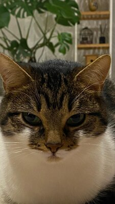
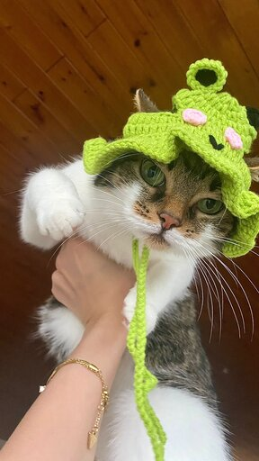
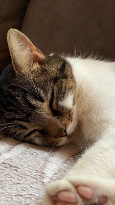
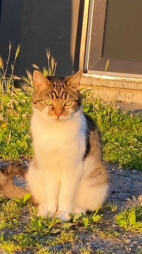
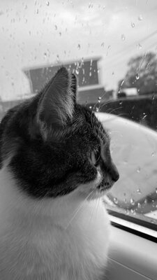
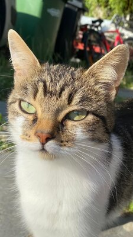
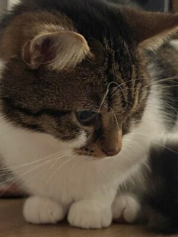

Over Maya
Achtergroend:
Maya kwam op een zonnig dag in 2022 in mijn leven toen ik haar adopteerde van mijn vriendin. Haar speelse geest en afhankelijke karakter stalen meteen mijn hart!
Leuke feiten:
- Favoriete speelgoed: Hengel muis met geluid.
- Voedselvoorkeuren: Is dol op kip, vooral gekookte kip met groeten.
- Persoonlijheid: Speels, nieuwsgierig en af en toe een beetje afstandelijk. Maya heeft van alles wat!
Galerij
Kijk naar enkele van mijn favoriete foto's van Maya:







Maya's Avonturen
- De keer dat ze een muis ving en him naar huis bracht.
- Haar eesrte bezoek aan de dierenarts.
- De tuin van de buurman binnenging en wegvluchtte voor hun hond!
Verzorging van Maya
Om Maya gelukig en gezond te houden, zorg ik ervoor dat ze regelmatig naar de dierenarts gaat en dat ze altijd toegang heeft tot schoon water en vers voedsel. Daarnast speelt ze dagelijks om actief te blijven.
Wil je meer weten over het verzorging van Katten? Bekijk deze handige tips op dierendokters.com.
Contact
Wil je meer weten over Maya? Stuur een bericht!